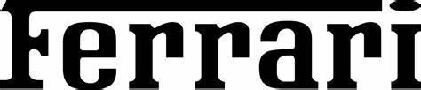

FerrariFerrari S.p.A. je italijansko podjetje, ki proizvaja športne avtomobile v mestu Maranello. Podjetje je leta 1929 ustanovil Enzo Ferrari. Sprva je bilo podjetje usmerjeno v izdelavo dirkalnih avtomobilov. Sponzoriral je voznike in proizvajalce dirkalnih avtomobilov, preden se je usmerilo v proizvodnjo športnih avtomobilov za cestno uporabo leta 1947 kot Ferrari S.p.A.. Podjetje ima v lasti tudi zasebno dirkalno stezo Fiorano Circuit. Trenutni predsednik Ferrarija je Benedetto Vigna.